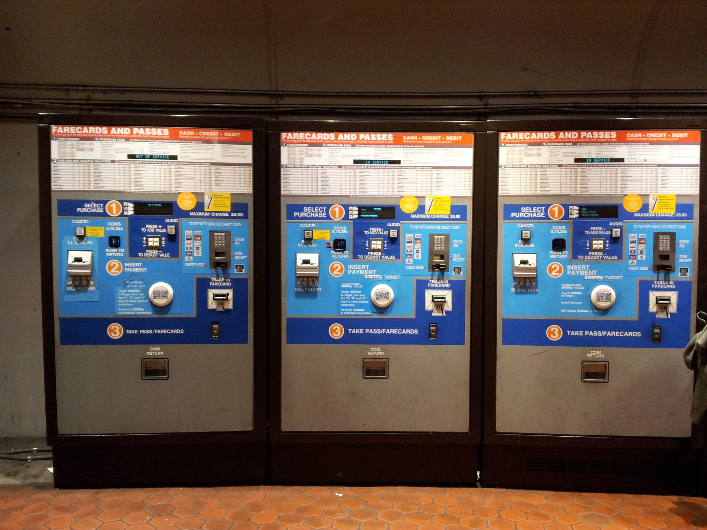
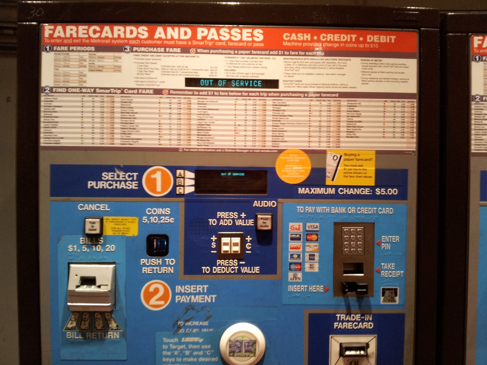
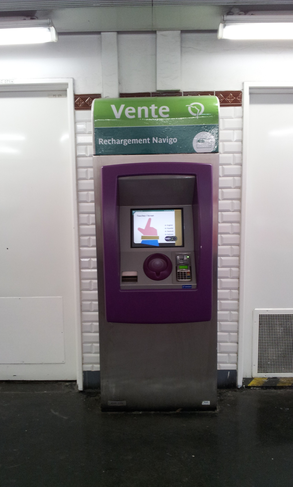

Goffredo’s voice: “Metrorail, the Metro System in Washington D.C. has many qualities: stations are wide, trains are modern and fast; it is a very young enterprise, the first trains began operation in the mid seventies; today, there are 86 Metro stations within a 106.3 mile network. There is only one problem: unless you are born and bred there, there is little chance you’ll find out how to buy a ticket.
  Image credit: RCThe parade of vending machines in every station in the D.C. Metrorail shocked me: every square centimeter of the panel is occupied by information and one does not need too much time to figure that a lot of it is actually useless.
The higher part of the panel ask you to calculate your fare according to the city zone and peak or off peak fare, then you are asked to choose between several options (SmartTrip card, Farecard or Pass?); options of which of course you know nothing. Then you are let to navigate your way through payment. The panel uses color coding (dark blue and light blue areas) to facilitate the purchase process. I gave up after few minutes and I decided to follow the only valuable piece of info on display: “for more information ask a Station Manager”.
So I asked for assistance. A very friendly staff person came to the rescue and purchased for me the two Farecards I needed. As I thanked her I asked her: - “have you ever seen a tourist capable of understanding all this and buy a ticket on their own?”
“No sir, unless you do not already know the system, there is no way you can understand which option is the right one for you”.
The constant need of the staff intervention negates the maind advantages of a self-service machine. Usability design is not just about engineering; the interface is the key.
We could not help thinking about the simple and effective roll bar of the vending machines in Paris that ask you to ‘touch the screen to begin’ and then guide the visitor step by step to choose and purchase their tickets.
 Image credit: RC